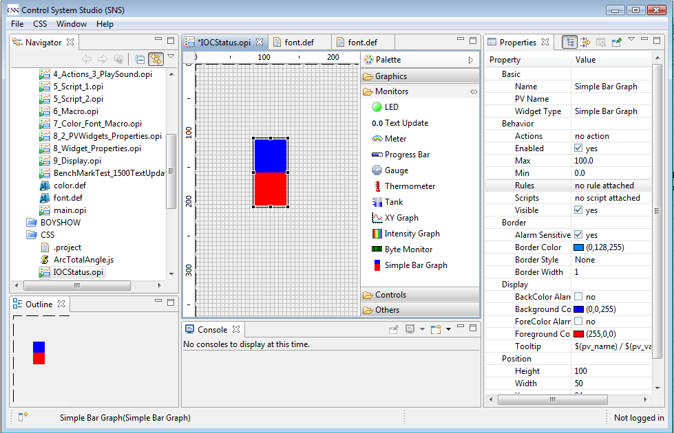
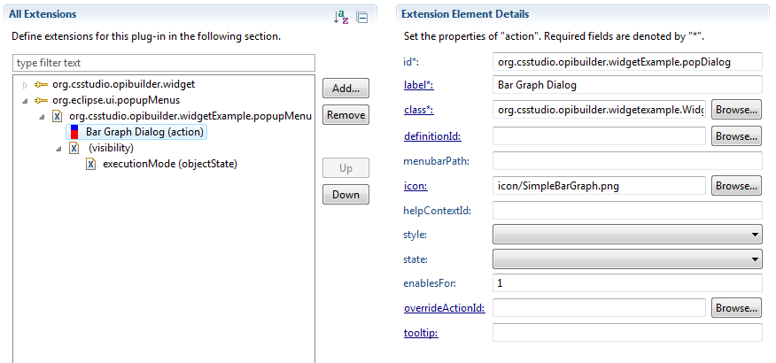
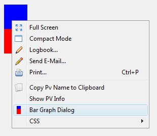
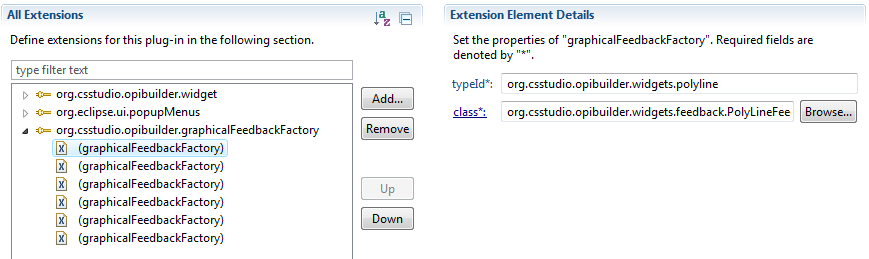

BOY is able to load customized widgets using Eclipse Plugin mechanism, so user can implements their own widgets by creating a new Eclipse plugin without touching BOY code. If you do think your widget can benefit other people, you can send your widget code to chenx1@ornl.gov so we can integrate it into BOY as a native BOY widget. This chapter will give you the concept of BOY widget and a step-by-step example. Before start, you should have some basic knowledge in Java and Eclipse plugin. The BOY widget figure is drawn by Draw2d, so you may also need to learn the basics of Draw2d.
The code of this example is availabe in BOY Examples->Miscellaneous->CustomizedWidget.
All BOY widgets should rely on the MVC (Model-View-Controller) pattern to separate responsibilities among their single components.
The model of a widget defines the set of properties, stores the according values. The model contains all data that gets persisted.
The view is a figure which is visible to the user.
The controller is called Editpart. Editparts are the link between the model and the view.
It is responsible for the behavior of the widget when properties value changed.
This example will create a simple bar graph widget which can display a numeric PV value.
The widget plugin will need to have BOY plugin (org.csstudio.opibuilder) as dependecy,
so you need to have BOY plugin and its dependent CSS plugins installed in your
Eclipse environment. You can simply copy BOY plugin and its dependencies from
your CSS plugin folder to your Eclipse dropin folder. If you are a CSS developer, you just need to
import these plugins into your workspace from your Mercurial repository.
Create a new plugin project with all the default settings. Add plugin org.csstudio.opibuilder as dependency.
The class org.csstudio.opibuilder.model.AbstractWidgetModel is the base class of all BOY widget
models. All the common widget properties are defined in AbstractWidgetModel:
AbstractWidgetModel defines two abstract methods you have to implement
within your custom model.The getTypeID() method should return a unique ID
which is used by the BOY framework to identify your model class.
The configureProperties() method is called by the BOY framework
during the instantiation of your model class. You can use it to equip your own widget model
with custom properties. To do so, you need to call addProperty(..) to add
a new property to the model’s property set. The signature of the addProperty(..) method
requests a property ID that must be unique within the widget model and an instance of
org.csstudio.opibuilder.properties.AbstractWidgetProperty that defines the property type.
The supported property types are described at here.
You can also create your own property type by extending
org.csstudio.opibuilder.properties.AbstractWidgetProperty.
Note: There is a convention between property id and property name, which means the
property id should be lower case of property name and the space in property name should be replaced with
underscore. For example, the property id of PV Name is pv_name. With this
convention, user can easily guess the property id in script.
The class org.csstudio.opibuilder.model.AbstractPVWidgetModel is the base class of all widgets that have the
capability of connecting PVs. It provides additional common widget properties:
All Container Widgets must subclass org.csstudio.opibuilder.model.AbstractContainerModel.
Our simple bar graph widget will need to connect PV, so it needs to subclass AbstractPVWidgetModel.
We will add two double properties to this widget: Min and Max.
public class SimpleBarGraphModel extends AbstractPVWidgetModel{
/** Lower limit of the widget. */
public static final String PROP_MIN = "max"; //$NON-NLS-1$
/** Higher limit of the widget. */
public static final String PROP_MAX = "min"; //$NON-NLS-1$
public final String ID = "org.csstudio.opibuilder.widgetExample.SimpleBarGraph"; //$NON-NLS-1$
/**
* Initialize the properties when the widget is first created.
*/
public SimpleBarGraphModel() {
setForegroundColor(new RGB(255, 0, 0));
setBackgroundColor(new RGB(0,0,255));
setSize(50, 100);
}
@Override
protected void configureProperties() {
addProperty(new DoubleProperty(PROP_MIN, "Min", WidgetPropertyCategory.Behavior, 0));
addProperty(new DoubleProperty(PROP_MAX, "Max", WidgetPropertyCategory.Behavior, 100));
}
@Override
public String getTypeID() {
return ID;
}
/**
* @return the lower limit
*/
public double getMin(){
return getCastedPropertyValue(PROP_MIN);
}
/**
* @return the higher limit
*/
public double getMax(){
return getCastedPropertyValue(PROP_MAX);
}
}
The view is responsible for the graphical representation of the widget.
All widget view must implement the interface
of org.eclipse.draw2d.IFigure. The class org.eclipse.draw2d.Figure
has implemented most of the functions, most of BOY widgets figure extended this class.In most cases,
the widget figure should be drawn in the function of paintClientArea(). The client area is the
area that is inside the border. So paint in this area will not affect the border area. BOY will automatically
draw borders for all widgets based on the border setting, so you do not need to consider the border in most cases.
public class SimpleBarGraphFigure extends Figure {
private double min =0;
private double max = 100;
private double value = 50;
@Override
protected void paintClientArea(Graphics graphics) {
super.paintClientArea(graphics);
//fill background rectangle
graphics.setBackgroundColor(getBackgroundColor());
graphics.fillRectangle(getClientArea());
//fill foreground rectangle which show the value's position
graphics.setBackgroundColor(getForegroundColor());
//coerce drawing value in range
double coercedValue = value;
if(value < min)
coercedValue = min;
else if (value > max)
coercedValue = max;
int valueLength = (int) ((coercedValue-min)*getClientArea().height/(max-min));
graphics.fillRectangle(getClientArea().x,
getClientArea().y + getClientArea().height -valueLength,
getClientArea().width, valueLength);
}
public void setMin(double min) {
this.min = min;
repaint();
}
public void setMax(double max) {
this.max = max;
repaint();
}
public void setValue(double value) {
this.value = value;
repaint();
}
public double getValue() {
return value;
}
}
BOY widget controller basically are special GEF edit parts. You don't need in-depth knowledge about GEF for most regular widgets. BOY provides a comfortable framework for that. If you want to have special behaviors on your widgets, for example, changing the behavior when you are clicking or draging the widget, you may need to have further knowledge about GEF.
All BOY widget controllers must subclass
org.csstudio.opibuilder.editparts.AbstractWidgetEditPart. For widget that needs to
connect to PV, its controller need to subclass
org.csstudio.opibuilder.editparts.AbstractPVWidgetEditPart.
public class SimpleBarGraphEditpart extends AbstractPVWidgetEditPart {
/**
* Create and initialize figure.
*/
@Override
protected IFigure doCreateFigure() {
SimpleBarGraphFigure figure = new SimpleBarGraphFigure();
figure.setMin(getWidgetModel().getMin());
figure.setMax(getWidgetModel().getMax());
return figure;
}
/**Get the widget model.
* It is recommended that all widget controller should override this method.
*@return the widget model.
*/
@Override
public SimpleBarGraphModel getWidgetModel() {
return (SimpleBarGraphModel) super.getWidgetModel();
}
@Override
protected void registerPropertyChangeHandlers() {
// The handler when PV value changed.
IWidgetPropertyChangeHandler valueHandler = new IWidgetPropertyChangeHandler() {
public boolean handleChange(final Object oldValue,
final Object newValue,
final IFigure figure) {
if(newValue == null)
return false;
((SimpleBarGraphFigure) figure).setValue(ValueUtil.getDouble((IValue)newValue));
return false;
}
};
setPropertyChangeHandler(AbstractPVWidgetModel.PROP_PVVALUE, valueHandler);
//The handler when max property value changed.
IWidgetPropertyChangeHandler maxHandler = new IWidgetPropertyChangeHandler() {
public boolean handleChange(Object oldValue, Object newValue, IFigure figure) {
((SimpleBarGraphFigure) figure).setMax((Double)newValue);
return false;
}
};
setPropertyChangeHandler(SimpleBarGraphModel.PROP_MAX, maxHandler);
//The handler when min property value changed.
IWidgetPropertyChangeHandler minHandler = new IWidgetPropertyChangeHandler() {
public boolean handleChange(Object oldValue, Object newValue, IFigure figure) {
((SimpleBarGraphFigure) figure).setMin((Double)newValue);
return false;
}
};
setPropertyChangeHandler(SimpleBarGraphModel.PROP_MIN, minHandler);
}
@Override
public Object getValue() {
return ((SimpleBarGraphFigure)getFigure()).getValue();
}
@Override
public void setValue(Object value) {
if(value instanceof Double)
((SimpleBarGraphFigure)getFigure()).setValue((Double)value);
}
}
The doCreateFigure() method creates figure by instantiating a SimpleBarGraphFigure.
It is also reponsible for initializing the figure with the property value in model.
The registerPropertyChangeHandlers() method is responsible for the behavior of the widget
when its property value changed. A property can have more than one handler. All handlers must implement
the interface of IWidgetPropertyChangeHandler. The handleChange()method will handle
the property value change in which oldValue is the old property value, newValue is the
new property value, figure is the widget figure.
The editpart of a widget is the widgetController in BOY javascript. You can add additional
methods here for javascript use.
So far, we have finished the coding part. Now, we need to register this widget with BOY so that BOY can recognize and list this widget in its widget palette.
Open the MANIFEST.MF file in your plugin project. Go to the tab of extensions.
Add an extension org.csstudio.opibuilder.widget. Configure the extension properties as shown in
the figure.
The global unique typeId of the widget which is the return value of the method getTypeID()
in widget model.
The name of the widget, which will appear in the widget palette.
The category of the widget. The default categories include Graphics, Monitors, Controls and Others. You can create a new category by giving a new category name, but this is not recommended.
The icon of the widget.
The model of the widget.
The editpart class of the widget.
The online help html file.
The description of the widget, which will be displayed as the tooltip.
You can hook up the widget's help page with BOY online help from toc anchor
../org.csstudio.opibuilder/toc.xml#thirdPartyWidgets.
If you are a CSS developer, now your have finished the plugin project. You can integrate it into CSS by including this plugin into your CSS build.
Here we will discuss how to add this widget to an existing CSS.
Open the MANIFEST.MF file and go to the overview tab.
Click Export Wizard. Change the Destination Directory to the any directory you want. Leave other
settings as default and click Finish. When exporting finished, go to the directory you set and copy
the jar file in plugin folder to the CSS dropins folder. Start CSS, you will see the
Simple Bar Graph widget in you CSS BOY palette! You can test it by setting
PV Name to sim://noise, setting max to 5, min to -5. You will
see it already has all the BOY PV widget functions such as PV connection, Border alarm sensitive and so on.

*This project zip file can be found at BOY Examples->Miscellaneous->CustomizedWidgetExample.zip. You can import it into your Eclipse
workspace by selecting File->Import...->Existing Project into workspace.
There are lots of exist resources come with BOY, such as linear scale,
round scale, AbstractBoolFigure, AbstractScaledWidgetFigure and so on.
They are included in the plugins of org.csstudio.swt.widgets and org.csstudio.swt.xygraph.
A draw2d figure can be composed of several other figures, so you can build your figure easily with these figure parts.
For example, the Byte Monitor widget is composed of an array of LED figures.
It is recommended to check if there are existing figure parts available for your new widget before
you start to create your widget figure from scratch.
The selected widgets in edit mode or the widget on which the context menu was actived in run mode
is the editpart of the widget. So it is easy to add a popup menu to this widget by
adding an objectContribution.

The Action Class can simply extend
org.csstudio.opibuilder.actions.AbstractWidgetTargetAction, which provided method getSelection()
to get the selected widgets.
public class WidgetContextMenuExample extends AbstractWidgetTargetAction{
public void run(IAction action) {
MessageDialog.openInformation(null, getSelectedWidget().getWidgetModel().getName(),
"This dialog is opened from the Context menu of SimpleBar Graph.");
}
/**
* @return the selected widget. In runmode, it is the editpart of the
* widget on which the context menu was activated.
*/
protected final SimpleBarGraphEditpart getSelectedWidget() {
return (SimpleBarGraphEditpart)getSelection().getFirstElement();
}
}
If you want the action can be Undoable/Redoable in editing mode, you need to create your org.eclipse.gef.commands.Command
and execute the command by calling execute(Command command). Please see
org.csstudio.opibuilder.widgets.actions.AddTabAfterAction.java for example.
You can also make the popup menu only visible for editing mode or run mode by adding a objectState visibility.
To make it only visible in editing mode, set name to executionMode and value to EDIT_MODE.
To make it only visible in run mode, set name to executionMode and value to RUN_MODE.
Here is the result of this example:

To use SWT widgets in BOY, you need to subclass org.csstudio.opibuilder.widgets.AbstractSWTWidgetFigure for
the figure. The model and editpart are same as regular BOY widgets. For an SWT widget, there are few drawbacks:
Please see BOY Combo widget or Web Browser widget as examples.
If you need some special behavior on the widget in editing mode, for example, keep the size of
the widget in fixed ratio when user is resizing it, you can create you own customized graphical feedback by
extending the extension point org.csstudio.opibuilder.graphicalFeedbackFactory. The class must
implement org.csstudio.opibuilder.feedback.IGraphicalFeedbackFactory. Two abstract
graphical feedback factory are provided in org.csstudio.opibuilder.widgets.
org.csstudio.opibuilder.widgets.feedback.AbstractFixRatioSizeFeedbackFactory
will provide the fixed size ratio behavior when user resizes it.
org.csstudio.opibuilder.widgets.feedback.AbstractPolyFeedbackFactory
will provide the behavior like Polyline or Polygon widgets.

Note: It is not recommended to give widget customized graphical feedback or
implement your own IGraphicalFeedbackFactory if it is not super necessary,
because the details are very complicated and need lots of GEF knowledge. If it is not desinged carefully,
it is very possible to have bugs introduced.